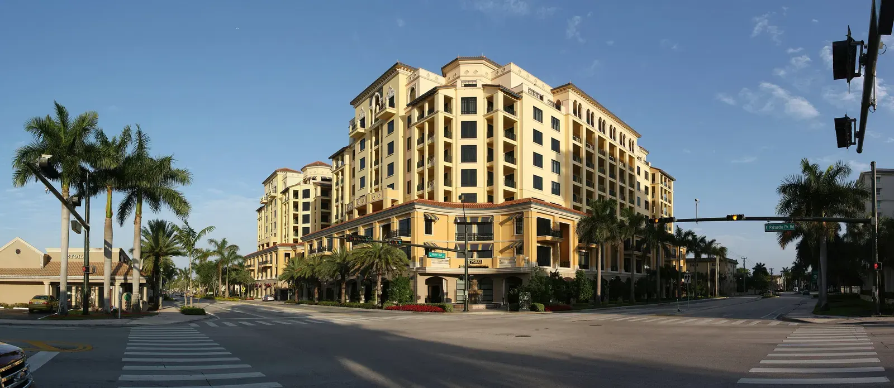

Em Boca Raton, as casas à venda vão de apartamentos acessíveis em comunidades 55+ até casas em clubes de golfe e imóveis no Intracoastal que passam de alguns milhões de dólares. É a única cidade da nossa lista que fica no condado de Palm Beach, o que muda impostos e distrito escolar. O escritório do Rui Cunha, em Deerfield Beach, fica logo ao lado, e Boca faz parte da rotina dele.
Como é morar em Boca Raton
Boca Raton fica logo ao norte de Deerfield Beach, no sul do condado de Palm Beach. O DataUSA aponta cerca de 100.234 habitantes em 2024 (DataUSA). A cidade é conhecida pelas praias, pelos clubes de golfe, pela universidade Florida Atlantic University (FAU), pelas compras e pela vida no Intracoastal (Koolik).
Para famílias brasileiras
Não encontramos uma fonte confiável sobre o tamanho da comunidade brasileira dentro de Boca Raton. O que se sabe é que o condado de Palm Beach está entre os condados dos EUA com mais imigrantes brasileiros (Migration Policy Institute), e Boca fica colada em Deerfield Beach, onde a presença brasileira é bem conhecida. Se você ainda não tem Social Security, veja o financiamento com ITIN, sujeito à aprovação do banco.
Bairros e comunidades
- Century Village at Boca Raton. Comunidade 55+ com cerca de 7.500 unidades e preços em geral entre US$ 100 mil e US$ 400 e poucos mil (55places).
- Boca Dunes, Boca Greens, Boca Teeca e Boca Inlet. Comunidades estabelecidas, cada uma com seu tipo de imóvel e faixa de preço (Momentum).
- Clubes de golfe e comunidades fechadas. Boca tem muitos condomínios fechados com campo de golfe e clube. As regras e taxas de sócio variam muito, então peça essas informações logo no início (Koolik).
Mercado imobiliário em Boca Raton
Boca são vários mercados em um. Segundo o relatório de agosto de 2026 da Koolik, a mediana das casas no condado de Palm Beach foi de cerca de US$ 700 mil, uns 12% acima do ano anterior (Koolik). No alto padrão, o relatório de luxo de 2026 de uma imobiliária apontou mediana de cerca de US$ 2,19 milhões para casas de luxo e US$ 850 mil para apartamentos e townhouses de luxo em Boca (Premier Estate Properties). O relatório da Miller Samuel do 4º trimestre de 2025 mostrou leve alta nas casas e leve queda nos apartamentos (Miller Samuel).
Essas fontes medem coisas diferentes, e nenhuma descreve "a casa típica de Boca". O preço muda muito entre um apartamento 55+ e uma casa em condomínio fechado. Peça ao Rui uma comparação atualizada das vendas recentes do tipo de imóvel que você procura.
Cuidados práticos: condomínio, seguro, enchente e impostos
Prédios antigos. Muitos prédios de Boca têm mais de 30 anos e enfrentam os custos do estudo de reservas. A lei de segurança de condomínios de 2022 exige inspeções em prédios de três andares ou mais e reservas estruturais financiadas (Rimkus). Há relatos de cobranças extras de US$ 10 mil a mais de US$ 100 mil em comunidades antigas (24-7 Press Release). Peça o estudo de reservas, o orçamento e o histórico de cobranças antes da oferta.
Enchente e seguro. Áreas costeiras e do Intracoastal têm mais risco de enchente, e a nova forma de cálculo da FEMA aumentou mais o seguro nas áreas costeiras de Palm Beach e Broward (WLRN). Quem tem seguro pela Citizens vai precisar de cobertura contra enchente, exigência que entra aos poucos até 2027 (News4JAX).
Impostos. Segundo o resumo de uma imobiliária, a alíquota total de Palm Beach foi um pouco menor que a de Broward em 2025 (Momentum), mas o valor real depende da cidade e de taxas especiais. Quem mora no imóvel como residência principal pode ter direito à isenção homestead, que também limita o aumento anual do valor tributável (Palm Beach County). Converse com um contador sobre o seu caso.
Escolas
Boca Raton é atendida pelo distrito escolar de Palm Beach (School District of Palm Beach County), não pelo de Broward. A Spanish River Community High School fica na 5100 Jog Road (Wikipedia). Consulte as notas atuais no site do Departamento de Educação da Flórida e confirme as escolas de cada endereço.
Como se locomover
Boca faz divisa com Deerfield Beach ao sul, e muita gente mora numa cidade e trabalha ou faz compras na outra. O trânsito muda bastante conforme o horário, então faça o trajeto no horário de pico antes de escolher o bairro.
Comprar com o Rui em Boca Raton
O Rui trabalha com imóveis no sul da Flórida desde 2003, como mortgage broker, broker e General Contractor licenciado, e sabe ler o orçamento de um condomínio ou um laudo de inspeção com olhar prático. Ele ajuda você a comprar casa na Flórida, a entender o financiamento com ITIN ou a vender seu imóvel. Faça as contas na calculadora de financiamento e compare com Deerfield Beach e Coconut Creek.
Perguntas frequentes
Quanto custa uma casa em Boca Raton?
Depende do tipo. A mediana das casas no condado de Palm Beach foi de cerca de US$ 700 mil no relatório de agosto de 2026 da Koolik, enquanto apartamentos 55+ podem sair por pouco mais de US$ 100 mil e casas de luxo passam dos milhões. Peça as vendas recentes da comunidade que você gostou.
Boca Raton fica em Broward ou em Palm Beach?
Em Palm Beach. Isso significa outro distrito escolar, outro avaliador de imóveis (property appraiser) e outras alíquotas de imposto em relação às cidades vizinhas de Broward, como Deerfield Beach.
O que conferir antes de comprar apartamento em Boca Raton?
Peça o estudo de reservas, o orçamento atual, a situação das inspeções e o histórico de cobranças extras. Prédios antigos podem precisar de reformas caras, e quem paga são os proprietários.
Dá para financiar em Boca Raton sem Social Security?
Muitos compradores usam o financiamento com ITIN, sempre sujeito à aprovação do banco. Veja o guia de financiamento com ITIN ou fale com o Rui.
Fale com o Rui
Comparando imóveis em Boca Raton? Peça ao Rui um levantamento atualizado das vendas nas comunidades que você gostou.